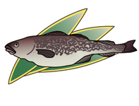

2012年2月号
「鱈腹」と「鱈」の関係は？

「鱈腹（たらふく）」とは、辞書によりますと「たくさん飲み食いするさま」「腹いっぱい」とあります。また、語源由来事典では、「鱈の腹部が膨れていることや、大変な大食漢であることからの当て字で、その由来は「鱈の腹」で間違いないが、「たらふく」という言葉を「鱈の腹」とするのは間違いである。「たらふく」の語源は、「足りる」という「十分になる」の意味からきた言葉であると解説しています。
なるほど、といった感じでしょうか。しかしどうであれ、「鱈」がこの季節を代表する食材であることに間違いはありません。
鱈の身は、カラダを温める効果があるといわれ、寒い季節の風邪予防はもちろん、白子にはビタミンDが、皮にはコラーゲンが豊富であるという、冬にぴったりの食材なのです。 この季節、日本では「鱈ちり、寄せ鍋、煮付け、焼き物、揚げ物」などと様ざまな料理で登場しますが、低カロリーで高たんぱくなヘルシー食材であるため、欧米などを中心に世界的でもとても人気の高い食材となっています。
ということで、この冬を健康で元気に乗り切るためにも「鱈料理」を「鱈腹」食べて「みたら」！！
なるほど、といった感じでしょうか。しかしどうであれ、「鱈」がこの季節を代表する食材であることに間違いはありません。
鱈の身は、カラダを温める効果があるといわれ、寒い季節の風邪予防はもちろん、白子にはビタミンDが、皮にはコラーゲンが豊富であるという、冬にぴったりの食材なのです。 この季節、日本では「鱈ちり、寄せ鍋、煮付け、焼き物、揚げ物」などと様ざまな料理で登場しますが、低カロリーで高たんぱくなヘルシー食材であるため、欧米などを中心に世界的でもとても人気の高い食材となっています。
ということで、この冬を健康で元気に乗り切るためにも「鱈料理」を「鱈腹」食べて「みたら」！！
 次月号へ
次月号へ